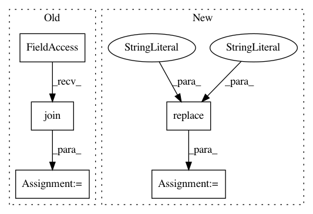

de336139770c6e9e035c0e402375efda48d75301,tensorflow/python/distribute/multi_process_lib.py,,_set_spawn_exe_path,#,89
Before Change
guess_path = sys.argv[0][:-3]
guess_path = guess_path.split(os.sep)
for path_reduction in range(-1, -len(guess_path), -1):
possible_path = os.sep.join(guess_path[:path_reduction] +
[guess_path[-1]])
if os.access(possible_path, os.X_OK):
path_to_use = possible_path
break
// The binary can possibly have _gpu suffix.
After Change
// and the binary is
// /.../tensorflow/python/distribute/input_lib_test_multiworker_gpu
org_tensorflow_path = sys.argv[0][:sys.argv[0].rfind("/tensorflow")]
binary = os.environ["TEST_TARGET"][2:].replace(":", "/", 1)
possible_path = os.path.join(org_tensorflow_path, binary)
logging.info("Guessed test binary path: %s", possible_path)
if os.access(possible_path, os.X_OK):
path = possible_path
In pattern: SUPERPATTERN
Frequency: 4
Non-data size: 5
Instances
Project Name: tensorflow/tensorflow
Commit Name: de336139770c6e9e035c0e402375efda48d75301
Time: 2020-11-18
Author: crccw@google.com
File Name: tensorflow/python/distribute/multi_process_lib.py
Class Name:
Method Name: _set_spawn_exe_path
Project Name: mne-tools/mne-python
Commit Name: e73dfe8ed1491ce2dada8ea70215229bdfc0c6eb
Time: 2019-09-20
Author: larson.eric.d@gmail.com
File Name: tutorials/source-modeling/plot_eeg_no_mri.py
Class Name:
Method Name:
Project Name: tensorflow/tensorflow
Commit Name: 448e080c752a1b5f54c422401b41e824b0274a91
Time: 2020-11-17
Author: crccw@google.com
File Name: tensorflow/python/distribute/multi_process_lib.py
Class Name:
Method Name: _set_spawn_exe_path
Project Name: xinntao/BasicSR
Commit Name: cedf2caddd84592416b1e487690f28e04c77e94f
Time: 2020-10-03
Author: wxt1994@126.com
File Name: basicsr/utils/util.py
Class Name:
Method Name: check_resume